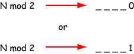

What is 24 mod 2? 0
Does the binary representation of 24 end with a 1 or with a zero? 0
You can determine the rightmost bit (the least significant bit) in the binary representation of a positive integer using modulo division by two.
Now that you have the rightmost bit, all you need to do is find the rest of the bits.
Think about erasing the rightmost 0 or 1 bit in the above.
(The same as shifting the bits right by one position.)
You are left with _ _ _ _ .
Those bits represent [N div 2],
because shifting right is equivalent to integer dividing by two.
How can you determine the rightmost bit of the integer [N div 2] ?